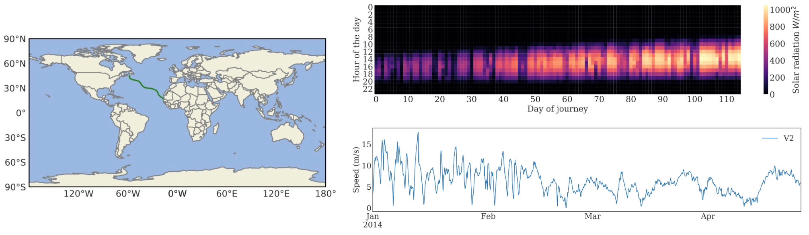
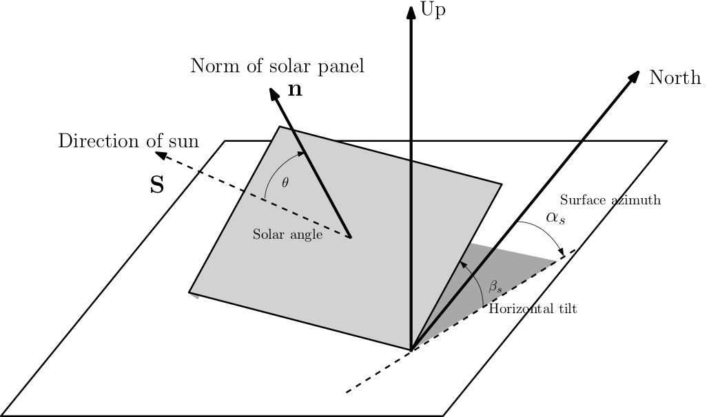
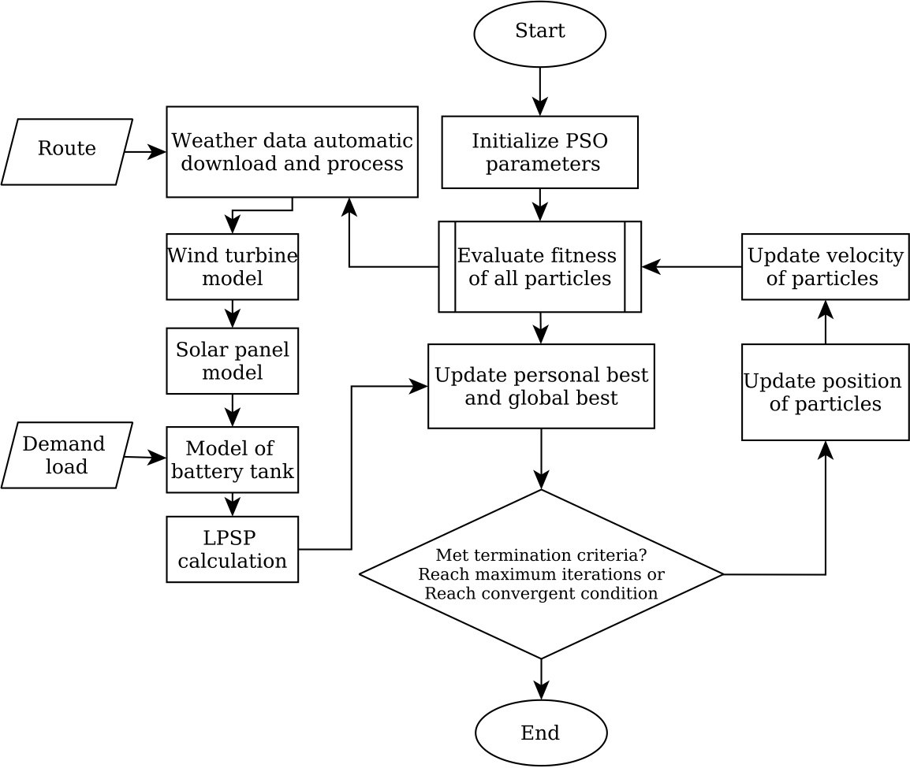

Hybrid renewable energy system for moving platformsRenewable energy system can harvest energy from sustainable renewable resources and supply clean energy to the power system. Hybrid renewable energy system (HRES) use multiple resources together can potentially provides long-term power supply to self-sustained moving platforms. Design optimisationConventional HRES design is site specific and it depends upon load demand and renewable resources available. It suffer problems such as its inaccuracy in power output estimation under the presence of platforms’ local motion, inability in handling various physical constraints, and insufficiency on the renewable resources data. A new data-driven simulation based optimisation method was purposed to solve those problems. This method use spatial-temporal data with non-stationary HRES model to design HRES by constrained multi-objective optimisation.


 Featured with capabilities such as intelligent data handle, nonlinear non-concave optimise, and automatic report generation, software used in this research are open sourced to the public. Dynamic power managementUnder construction |